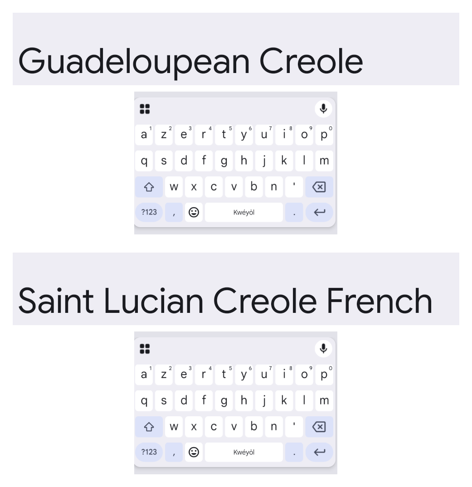

Comparatif
Le nôtre, Klavyé Kréyòl, si vous écrivez le kréyòl de Guadeloupe sur un téléphone Android. Et sans rien désinstaller.
Sur iPhone, la réponse honnête est : aucun, pour l'instant. Depuis iOS 27, Apple pose les lettres du kréyòl, sans rien proposer pendant la frappe. Notre version iPhone est en préparation, sans date annoncée.
Gboard fait aussi des choses que le nôtre ne fait pas, comme écrire en glissant le doigt. C'est dans le tableau, plus bas, et ce n'est pas la question de cette page.
⭐⭐⭐ très bien ⭐⭐ bien ⭐ faible ✕ non
| Klavyé Kréyòl | Gboard celui de Google | Clavier Samsung | Clavier Apple iPhone | |
|---|---|---|---|---|
| Écrire le kréyòl de Guadeloupe | ||||
| ✍️ Il écrit le kréyòl guadeloupéen | ⭐⭐⭐c'est sa raison d'être | ⭐⭐depuis 2018, mais il l'appelle « Kwéyòl » | ✕il ne le propose pas | ⭐⭐les lettres, rien de plus |
| 💬 Il propose des mots kréyòl pendant que vous tapez | ⭐⭐⭐ | ⭐⭐⭐ | ✕ | ✕ |
| 🔀 Il propose le kréyòl et le français en même temps | ⭐⭐⭐sans rien régler | ⭐⭐il faut l'activer | ✕ | ✕ |
| 🚫 Il ne change jamais un mot par un autre | ⭐⭐⭐c'est impossible chez nous | ⭐8 mots changés sur 59 | ✕ | ✕ |
| 🔤 Les lettres é è ò sont faciles à taper | ⭐⭐⭐é et è ont leur touche | ⭐⭐il faut rester appuyé | ✕clavier français | ⭐⭐à la place de Q et X |
| Comprendre et apprendre les mots | ||||
| 📖 Un dictionnaire kréyòl-français dedans | ⭐⭐⭐1 145 mots | ✕ | ✕ | ✕ |
| 🎮 Des jeux pour apprendre des mots | ⭐⭐⭐six jeux, et des cartes à collectionner | ✕ | ✕ | ✕ |
| 🏆 Il compte les mots que vous apprenez | ⭐⭐⭐sept niveaux, de Pipirit à Potomitan | ✕ | ✕ | ✕ |
| Le reste | ||||
| 🪶 Il est léger sur un téléphone modeste | ⭐⭐⭐53 Mo | ⭐132 Mo | non mesuré | non mesuré |
| 🔒 Vos textes restent sur votre téléphone | ⭐⭐⭐aucun accès à Internet | ✕il accède à Internet | ✕il accède à Internet | non vérifié |
| 🎤 Dicter à voix haute en kréyòl | ✕pas de dictée | ✕il dicte, mais pas dans cette langue | ✕ | ✕ |
| ✋ Écrire en glissant le doigt | ✕pas encore | ⭐⭐⭐ | non vérifié | non vérifié |

Vous n'avez rien à supprimer. Un téléphone Android garde plusieurs claviers en même temps et vous passez de l'un à l'autre quand vous voulez. Gardez celui que vous avez, ajoutez le nôtre.
Pour passer de l'un à l'autre : dès qu'un clavier est ouvert, une petite icône de clavier apparaît en bas de l'écran, à côté des boutons de navigation. On appuie dessus, on choisit.
Ensuite, selon votre cas :
Ce que notre clavier ne fera pas pour vous : écrire en glissant le doigt, garder un presse-papiers, dicter à voix haute. Autant le savoir avant de l'installer.
Chaque étoile vient d'un essai daté, fait sur un même téléphone, un Samsung Galaxy A21s. Le détail de chaque ligne, avec la date, l'appareil et la source, est sur la page comparatif détaillé.
Deux réserves, dites franchement. Les phrases des essais viennent des textes d'auteurs guadeloupéens sur lesquels notre dictionnaire est construit : le test nous est donc favorable. Et une case « non vérifié » veut dire que nous n'avons pas pu le contrôler nous-mêmes, pas que la fonction manque.